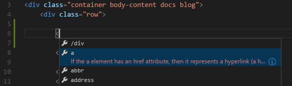

VS Code对HTML的相关 HTML Programming in VS Code
当你在VS Code中编辑HTML文件时，你将会获得所有应有的支持及一些更多的小玩意。
When editing HTML files in Visual Studio Code you get all of the basics and a few more things :)
智能感知 IntelliSense
当你在编写HTML的时候，VS Code会提供一些智能感知的建议。下图中你可以看到一个包括对</div>标签闭合的基于当前语境的建议列表。
As you type in HTML, we offer suggestions via HTML IntelliSense. In the image below you can see a suggested HTML element closure </div> as well as a context specific list of suggested elements.

VS Code同样提供对于元素，标签，一些值（在HTML5中定义的），lonic和AngularJS中标签的支持。在任何时候只要按下 kb(editor.action.triggerSuggest)就可以了。
We also offer up suggestions for elements, tags, some values (as defined in HTML 5), Ionic and AngularJS tags. You can trigger suggestions at any time by pressing kb(editor.action.triggerSuggest).
HTML格式化 Format HTML
为了改进你的HTML代码的格式，可以按 kb(editor.action.format) 并选中区域来进行重新格式化。
小贴士: 对于HTML格式化的设置详见 用户与工作空间.
To improve the formatting of your HTML code press kb(editor.action.format) and the selected area will be reformatted.
Tip: Configure the HTML formatter settings in the User and Workspace Settings.
支持Emmet Emmet snippets
我们提供Emmet代码拓展，只要按 kb(editor.emmet.action.expandAbbreviation)就可以了。

小贴士:Emmet语法详见 Emmet cheat sheet
我们同样支持 用户定义代码段.
We support Emmet snippet expansion, simply press kb(editor.emmet.action.expandAbbreviation).
Tip: See the HTML section of the Emmet cheat sheet for valid abbreviations.
We also support User Defined Snippets.
接下来 Next Steps
看看关于
- CSS, Less 和 Sass - VS Code对CSS（包括Less和Sass）有着顶级的支持。
Read on to find out about:
- CSS, Less and Sass - VS Code has first class support for CSS including Less and Sass.